How Success Works Reversing Tropical Deforestation: Agroforestry and Community Forest Management (Nakhon Sawan Province, Thailand)
- Prepared by: Gerry Marten and Julie Marten
- Return to main How Success Works page
- View detailed description of this case
Downloads
- Download all lesson materials (ZIP; editable Microsoft Word and PowerPoint files).
Lesson Contents:
- Suggested Procedure (Lesson Plan)
- Narrative Handout (Short Version)
- Narrative Handout (Extended Version)
- Ingredients for Success Handout (Short Version)
- Ingredients for Success Handout (Extended Version)
- Ingredient for Success (Student Worksheet)
- Ingredients for Success (Teacher Key)
- Feedback Diagrams (Student Worksheet)
- Feedback Diagrams (Teacher Key)
- Ingredients for Success PowerPoint (Preview)
- Student-Centered How Success Works PowerPoint (Preview)
- Video (View and Download)
1. Suggested Procedures for “How Success Works” Lessons
- Prepared by Gerry Marten and Julie Marten (EcoTipping Points Project)
The lesson plan below provides a full menu for use from primary school to high school. Depending on the grade level and the unit of study that provides the context for a lesson, teachers can pick and choose from the steps below, tailoring the style of the lesson to the circumstances and changing the order of some of the steps if they wish. For example, if a lesson emphasizes “systems thinking,” it might proceed directly from a video or narrative handout (Steps 3-4) to feedback diagrams for that success story (Steps 8-9), and then create a “negative tip” feedback diagram for an issue that students identify from their local scene (Step 11), covering Ingredients for Success (Steps 5-7) later if desired. A very simple lesson, appropriate for primary school, might proceed directly from a story (Step 3 or 4), and reviewing the story, to exploring briefly what might be done about a local problem.
Step 1
Have students write a journal responding to the following prompt:
“Think of a time when something you or your family cared about was falling apart, or falling into decline (You can give examples: friendships, a project, a class, a job…) What did you do to try to turn things around? Did it work? How or how not? Do you think doing something else might have worked better?”
Step 2
After students have written their journals and shared back with the class, introduce the idea of communities being in decline, or falling apart, because of their relationship with their environment. Explain how these communities must change in order to sustain themselves, but knowing what to change is rarely clear or simple. Tell students that you will use the experience of a community that turned things around, from decline to restoration and sustainability, to learn lessons about what it takes to achieve that kind of success.
Step 3
Show a short video on one of the success stories to quickly introduce students to the basic concept of EcoTipping Points. The Apo Island case is a good choice to start. It is a compelling story with a simplicity that clearly reveals the basic concept. An effective way to introduce the video is to briefly:
- Explain the story setting and what will happen during the “negative tip” portion of the video, emphasizing what set decline in motion and what changed during decline.
- Ask students to watch for what the people in the story did to turn things around (what they did first, what they did next, what they did after that, and so on).
After seeing the video, students can work in small groups to list what the people in the story did first to turn things around, what they did next, and so on. The entire class can then go over it together. If the lesson will be continued in further detail, the teacher can tell students now that they understand what an EcoTipping Point is, they will look closely at a success story – perhaps the same as the video or perhaps another story – to identify the ingredients for success in that story and determine how decline was reversed. If the story selected for further study is a new one, the video for that story can be shown at this time, or it can be shown at the end of the lesson to pull the lesson together. The New York City community gardens story is a good one for American classes.
Step 4
A narrative handout can also be used for the selected story. There are two levels of the narrative available: a short version and an extended version, depending on the level of your course. The student worksheet comes with frontloaded vocabulary. Review the vocabulary with them to improve student comprehension and introduce key concepts of human ecology. It may be useful for students to underline those words when they read them. The vocabulary is also useful for assessment.
Step 5
Pass out a copy of the “Ingredients for Success” handout and review the meaning of each ingredient. There are two levels available: a short version and an extended version, depending on the level of your course. They come with frontloaded vocabulary for student comprehension. It may be useful, as you go over each ingredient, to ask students to share real life examples of what that ingredient might look like. This will help them, later, when they try to identify those ingredients in the case studies.
Step 6
Either individually, or in groups, have students read a narrative handout for the story and write bullet points onto their Ingredients for Success worksheet, listing examples of events, actions, or conditions in the story that they associate with each ingredient for success.
Step 7
When students have completed their work, it can be reviewed as a whole class with the teacher-led Ingredients for Success PowerPoint presentation. The PowerPoint presentation has comprehensive bullet-points that can be used as is or modified to meet your needs. On each slide there are also several photographs to help illustrate the information. There are also additional background notes for the instructor on the notes section of each slide, as well as the Ingredients for Success Teacher Key, which describes examples of each ingredient in the selected case. If you prefer to use a PowerPoint without any pre-written notes on the slides as your point of departure, an editable slide show (with photo captions in the notes section but no text on the slides themselves) is available for your use.
Step 8
After students have seen success in action, they can learn systems thinking to understand what drives decline, how turnabouts from decline to restoration work, and what drives restoration. Explain the following ideas:
- Tipping point – A “lever” (i.e., an action that sets dramatic change in motion).
- Negative tip – The downward spiral of decline.
- Negative tipping point – The action or event that sets a negative tip in motion.
- Positive tip – The upward spiral of restoration and sustainability.
- Positive tipping point (also called EcoTipping Point) – The action that sets a positive tip in motion by leveraging the reversal of decline. An EcoTipping Point is typically an “eco-technology” (in the broadest sense of the word, such as the marine sanctuary at Apo Island or community gardens in New York City), combined with the social organization to put that “eco-technology” effectively into use.
Step 9
Pass out a feedback-diagrams worksheet for the students to map out the vicious cycles driving the negative tip in the story, and the virtuous cycles driving the positive tip. There is also a Teacher Key for feedback diagrams with notes for teachers. Fill out the “negative tip” diagram together, noting the negative tipping point, drawing arrows between boxes, and writing the direction of change (increasing or decreasing) in each box. Then, turn to the “positive tip” diagram. After noting the EcoTipping Point as a starting point, let the students fill out the “positive tip” diagram on their own, and review the results as a class. Students should understand that they are not expected to come up with diagrams identical to the Teacher Key. While most of the arrows showing “what affects what” are obvious, others are a matter of interpretation. When students compare their “negative tip” and “positive tip” diagrams, they will discover that:
- One portion of the “positive tip” diagram is identical to the “negative tip” diagram,” except change is in the opposite direction (i.e., transformation of vicious cycles to virtuous cycles).
- The rest of the “positive tip” diagram is new virtuous cycles created by the positive tipping point. Those virtuous cycles help to lock in the gains.
Feedback diagrams look complicated at first glance, because most of us are less accustomed to looking at cause and effect cyclically. But students of all ages catch on very quickly. After you have gone through one worksheet together, most students find it no more difficult to understand than the basic cause and effect diagrams they already know. This diagram is just cyclical instead of linear!
Step 10
While this lesson plan suggests how to teach one success story at a time, the lesson can easily be modified to teach the stories collectively. For instance, small groups could be designated to identify the Ingredients for Success in different stories and then teach the “Ingredients for Success” PowerPoint for their story to the class. Students could jigsaw the stories, or use the Student-Centered How Success Works PowerPoints to explore the cases independently. For each of the How Success Works flagship cases there is an editable PowerPoint slide show containing photos about the story. These PowerPoint files contain no bullet points or other text information on the slides themselves, but in the notes section of each slide there is a caption that briefly describes the photo and its role in the story. These Student-Centered How Success Works slide shows can be used for any level of K-12 and beyond as a base for students to explore and teach a success story within the parameters of their grade level and the teacher’s content focus and desired outcome. Students can build their own presentations for (a) teaching other students about the case, (b) using the photos as background for a creative retelling of the community’s experience, or (c) another task that suits the specificity of your classroom. The notes already in the slides can serve as a guide for students to research additional information from that case’s video, written narratives, “Ingredients for Success” PowerPoint, and feedback diagrams.
Step 11
The same procedures that were applied to investigating EcoTipping Points success stories can be applied to an issue that students identify from their local scene:
- Students think of issues, involving things in decline, and select an issue for EcoTipping Points analysis.
- They prepare a “negative tip” feedback diagram for the issue to clarify what is driving decline.
- They examine their “negative tip” feedback diagram for elements that could be modified to set positive change in motion. They brainstorm possible actions (i.e., EcoTipping Points) for leveraging the change.
- They run through the Ingredients for Success to consider how each ingredient might contribute to making the actions more effective, and they devise additional Ingredients for Success that could be helpful for dealing effectively with their issue.
As with lessons built around EcoTipping Point success stories, it is not necessary for students to follow all of the steps above when exploring a local issue. They can focus on feedback diagrams, Ingredients for Success, or both.
2. Narrative Handout (Short Version)
Reversing Tropical Deforestation: Agroforestry and Community Forest Management in Thailand
The story of Khao Din village began in the 1950s, when poor farmers moved to a new area of forest land recently opened for settlement. The soil of the newly cut forest was rich, and the crop harvests were bountiful. There were edible plants growing wild near the houses; the fish in the streams were easy to catch; and animals such as wild boars roamed nearby. With such abundance at hand and a cooperative spirit among the villagers, life was good.
However, things started to change in the 1960s when the Thai government began encouraging farmers to grow cash crops for export. It provided loans to farmers for hybrid seed, chemical fertilizers, pesticides, and farm equipment to grow crops such as rice, maize, jute fiber, and cassava, each farmer specializing in a crop for sale instead of growing a diversity of food crops for his family. The farmers cut more forest to expand their farmland and sold the timber as a bonus. They never had so much money before and started purchasing electronic appliances, motorcycles, and other modern merchandise.
But soon crop prices began to decline as many farmers grew the same products. Matters worsened when droughts came and crops started to fail. As desperate farmers went deeper into debt, they were forced to cut even more forest to expand their fields, until there were almost no trees left. Streams and wild animals disappeared, and heavy rains washed away the unprotected topsoil. Soil fertility declined even further because the supply of animal manure decreased when people got rid of draft animals such as water buffalo as they mechanized their farming. Farmers applied larger quantities of costly fertilizer to their damaged soil, trying to increase their yields as much as possible.
Eventually, their fertilizer, pesticide, and farm equipment costs were so high, and their crop harvests so low, that they were not earning enough money to buy food for the family. Villagers started moving to cities in search of work, and families were split up. The people were torn from their traditional social ways, and juvenile delinquency appeared for the first time. Trust, cooperation and their sense of community began to fall apart.
Fortunately the story does not end there. In 1986, a team from the nonprofit organization Save the Children was sent to Khao Din village by the Thai government. Instead of providing charity, Save the Children was determined to help Khao Din find sustainable solutions. At first, the villagers were suspicious of these strangers, but after many long discussions, the villagers realized that they themselves were the cause of their problems because of the way they had been using their land. With this shared awareness came the will to plan actions that would bring restoration. As Buddhists, they strongly believed in a harmonious relationship with nature, and they knew that restoring that harmony was the key to their survival.
Save the Children helped the villagers to map out their own solutions to the crisis. The villagers decided that instead of relying on a few cash crops grown in monocultures, with a single crop filling each field, they would design diverse “agroforestry” systems with a variety of useful trees and crops mixed together on the same fields, resembling in many ways the structure of a natural forest. Their abandoned traditional methods had incorporated many of the same elements, and the older villagers remembered how it worked.
They started by trying it on just a few farms. Within one growing season those families were able to feed themselves again, saving dramatically on food costs. The diversity of crops provided a balanced and nutritious diet. Year-by-year, more villagers, convinced of the advantages, adopted similar approaches on their own farms.
The full benefits of agroforestry unfolded over the next five years as the trees matured. Agroforestry produced a larger quantity of food because the diversity of trees and crops filled the farm space throughout the year. And the agroforestry was organic, with no costly and environmentally destructive chemical fertilizers or pesticides. It could function without chemicals because it copied the structure of a natural forest in a way that allowed nature to do the work of restoring and maintaining soil fertility. The trees bore fruit for the kitchen table and for sale, and their leaf fall supplied organic fertilizer to replenish the soil. The dense vegetation protected the soil from erosion and provided natural pest control because each crop pest, specializing in a particular crop, had difficulty finding its food in a field full of other plants. Ponds holding irrigation water produced fish for home and sale. And with so many crops, if one crop failed, or had a poor price in the market, others would succeed. In addition, villagers could now build thriving cottage industries that processed the goods of their land.
The villagers also decided to establish a community forest. To protect the forest, they agreed on rules for harvesting its resources. Only Khao Din villagers were allowed. The restored forest provided fruits, nuts, medicines, building materials – and firewood for cooking. Soil erosion was reversed, and the damaged watershed repaired itself. Streams and wild animals reappeared.
Khao Din’s village leader formed an “Association of Agriculture, Environment, and Development” to unite and organize the villagers and spread their success to forty villages in the surrounding area. Their pride and achievement gained even more momentum when Thailand’s beloved king gave his moral support to their efforts.
Now thousands of families are pursuing a variety of locally designed forms of agroforestry and sustainable agriculture on land covering thousands of acres. Natural forests, largely devastated by misuse, are regenerating over an even larger area. With productive land for farming right at home, migration to the cities has slowed down, so the villages once again have a balance of men and women of all ages to strengthen the community and care for the young. These people are not earning as much money as they once dreamed, but they can once again count on the land and each other for support and nurture.
As a bonus, Khao Din and its neighbors have helped to combat global warming. Tropical deforestation is responsible for more carbon dioxide emissions than every car, truck, airplane, train, and ship on the planet combined. The destruction of Khao Din’s forests put carbon dioxide into the atmosphere, but the return of trees to their landscape removed carbon dioxide from the atmosphere and put that carbon back on the land. By following Khao Din’s example, farmers throughout the tropics could help reduce greenhouse gases while securing a better life for themselves. The way Khao Din arrived at that solution – by shared community awareness and action – can serve as an example to us all, no matter where we live.
3. Narrative Handout (Extended Version)
Reversing Tropical Deforestation: Agroforestry and Community Forest Management in Thailand
- Authors: Gerry Marten and Amanda Suutari
- See the detailed source document on which this article is based
Government-promoted commercialization of agriculture was pushing Thailand’s farmers into a downward spiral. Increasing cash outlays for chemical fertilizers and pesticides, destruction of natural soil fertility as a result of heavy chemical application and soil erosion, and water shortages due to extensive deforestation had left nearly every rural family with debilitating debts and a widespread sense of desperation. But in 1988, when a development project helped farmers to achieve a shared understanding of their predicament, the farmers charted a strategy to restore their environment, economy, and community. Diversification through agroforestry-based farming, home processing of agricultural products, and community forest management enabled villagers to recapture control of their lives. At the same time, restoration of their forest removed carbon dioxide from the atmosphere, making a local contribution to reducing greenhouse gases and bringing global warming under control.
In 1954, Ajaan Thanawm’s family—along with about fifty other families—migrated from the impoverished Khorat Plateau of Northeast Thailand to Nakhon Sawan province to stake a claim on newly opened forest land. They found dense jungle with seemingly infinite resources – trees, good soil, fish, and wildlife such as wild boar, tigers and elephants. The newcomers cleared a small portion of the land for crop production, and cut trees for house construction and firewood. “It was easy to find food here,” recalls Thanawm. “There were many edible plants and vegetables growing wild near our houses. The fish in the streams were easy to catch.” With abundance at hand and a cooperative spirit in the village, life was good.
Things started to change in the 1960s. With encouragement from the World Bank, the Thai government launched an economic growth model with export-led development as its centerpiece. Natural resources–forests, fisheries, and agriculture—were re-oriented toward industrial-scale export to overseas markets. Thailand’s economy grew at around 10% per year, one of the fastest-growing in the world. But this took a heavy toll on the health of the watersheds. Thailand’s forest cover declined from 53% in 1961 to 29% in 1985.
Farmers were encouraged to modernize and grow cash crops such as rice, maize, jute, and cassava for export. An Agricultural Credit Bank was established to provide them loans for hybrid seed, chemical fertilizers, pesticides, and farm equipment. Small-scale farmer Thanawm and millions like him switched from diversified traditional agriculture to monocropping cash crops with heavy use of chemicals. They cut more forest to expand their farmland and sold the timber as a bonus. The farmers, who never had so much money in their pockets before, used the money from loans, farm earnings, and timber sales to buy electronic appliances, motorcycles, and other modern merchandise.
After an initial flush of quick cash, crop prices began to decline because so many farmers were growing the same thing. Matters became worse when droughts came and the crops started to fail. Unable to keep up with the payments on their loans to the Agricultural Bank, farmers fell prey to opportunistic informal money lenders who charged as much as 10 percent interest per month. People began to go deeper into debt.
This was the beginning of a downward spiral. Desperate to make good on their debts, villagers eventually cut the last remnants of forest to expand their fields. By that time, there were virtually no trees left on the hillsides. People say that it became hotter and drier. Soil fertility declined because mechanized plowing led people got rid of their draft animals such as water buffalo, which had been a source of animal manure for the fields. Extensive monoculture of cash crops on fields from which all remaining trees were removed was accompanied by increasing application of chemical fertilizers to compensate for the loss of natural soil fertility. Soil erosion increased, along with crop vulnerability to dry spells, since the capacity of the hardened soil to retain moisture had declined. Rainwater just ran off the fields. Farmers struggled to compensate for depleted soil fertility by applying more and more chemicals, which only increased production costs and debt even further. Streams that provided crop irrigation during the dry season were drying up. Emergency food supplies from forests were depleted, fish were poisoned by toxic agrochemicals, and wildlife virtually disappeared. And lands were being foreclosed due to continued failure to pay off loans.
Eventually, their fertilizer, pesticide, and farm equipment costs were so high, and their crop harvests so low, that they were not earning enough money to buy food for the family. People began looking for work in the cities, and families were split up. “Unlike in the past when people really cared for one another, everyone was now worried about their own fields and their own family’s problems,” says Thanawm. “For the first time ever, we began to have psychological and social problems. There was little trust and less cooperation.” Migration in search of urban jobs led to the disintegration of communities; villages increasingly became populated by the young and elderly. Juvenile delinquency, previously unheard of, emerged as communities were rapidly torn from their traditional social norms.
In a relatively few years, Thanawm and his village had gone from near Eden-like abundance and comfort to a hardscrabble existence typified by hunger, poverty and social disintegration. But fortunately the story does not end there. Thanawm and his fellow villagers made some key changes which reversed the downward spiral.
It began in 1986, when a team from the non-profit organization Save the Children was sent to Khao Din village by the Thai government. By that time, the district had become one of the nation’s poorest. Rather than simply distributing aid from donors, the Save the Children team awakened villagers’ awareness about the source of their predicament. Through long and at times arduous discussions, villagers recognized that they were primarily responsible for bringing about their own problems, because of decisions they had made on how to use and manage their local resources. This “awakening” created tremendous inspiration and confidence that they could, similarly, come up with their own solutions.
“It was amazing! People were lighting up like light bulbs!” says Save the Children staff member Andrew Mittelman. “Remembering what the land and local natural resources were like when they arrived, villagers kept saying: ‘We never thought this could happen. We couldn’t imagine this place of abundance would become a desert.’ They were saying: ‘My God, what have we done?’” This collective awareness prompted the villagers to consider what they could do to change the situation.
The farmers and Save the Children staff began to explore the potential of integrated farming built around agroforestry, in which a mix of trees and annual crops would provide sustained harvest throughout the year while helping to repair some of the water, soil and economic damage. Agroforestry was not new to these people. Their traditional subsistence systems had incorporated many of the same elements. They began with small-scale experiments, where farmers who could afford to take the risk were selected by their peers to create a demonstration system for everyone to evaluate.
Thanawm was among the first experimenters. He planted the periphery of his farm with fruit trees. And in the middle he made a narrow fish pond with an “island” on which vegetables grew. The farmland surrounding the pond consisted of plots for a wide range of crops including fruits and vegetables, medicinal plants, and culinary herbs and spices.
Because the agroforestry mimicked a natural forest, it provided natural processes similar to those of forests for restoring and maintaining the ecological health of the landscape. It produced a larger quantity of food because the diversity of trees and crops filled the farm space throughout the year. While agroforestry drastically cut household food costs, it was also organic with no costly and environmentally destructive chemical fertilizers or pesticides. It could function without chemicals because it allowed nature to do the work of restoring and maintaining soil fertility. The trees bore fruit for the kitchen table and for sale, and their leaf fall supplied organic fertilizer to replenish the soil. The dense vegetation protected the soil from erosion and provided natural pest control because each crop pest, specializing in a particular crop, had difficulty finding its food in a field full of other plants.
More diverse agriculture, along with watershed restoration, led to more resilience to weather and market fluctuations. Year-round food security increased dramatically. If one crop failed, others would succeed. What started on eight acres of demonstration plots grew year by year as more villagers adopted similar approaches on their own farms.
The Khao Din farmers also decided to establish a community forest. The restored forest now provides fruits, nuts, firewood, medicines, and building materials. It is also vital in repairing the damaged watershed. Soil erosion and degradation have been reversed. Streams, along with a variety of animals long thought to be locally extinct, have reemerged. The community developed a sense of ownership of the land, which—together with increased awareness of environmental problems—led to even better stewardship. To protect the forest, rules were established governing the harvest of forest resources by villagers. Outsiders were not allowed to cut trees in the community forest or otherwise damage it.
Today Khao Din is a thriving community of 2,500, and migration to Bangkok has declined, along with the socially disruptive trends it created. After Save the Children left, Thanawm continued the organizational efforts. He founded a group called “Association of Agriculture, the Environment and Development, Nakhon Sawan,” which now includes 40 villages and a total of 2,545 families. They pursue a variety of locally designed forms of agroforestry and sustainable agriculture on land covering thousands of acres. In the late 1990s, their efforts were reinforced by the Thai government as it began supporting agroforestry and community managed forests throughout the nation under the auspices of the King’s “Sufficiency Economy” program.
Although Khao Din has restored environmental sustainability, the social sustainability of its agroforestry remains to be seen. Their agroforestry provides well for basic family needs, and it fosters a healthy social environment in many ways. However, so far it has not generated large cash incomes, and therefore falls short of satisfying the widespread aspiration in Thailand, particularly among the younger generation, for the acquisition of more consumer goods.
Nonetheless, the benefits of Khao Din’s choices cannot be denied. Thanawm sums it up: “Most of all, in terms of change, was the change in people’s thinking. We are learning together as a community, sharing knowledge with each other. People no longer think, ‘We are in trouble, and we can do nothing about it.’ We know now that with some careful thinking and a lot of shared effort, we can solve our problems, and fix what is broken. Even though we don’t have much money, I’m happy. We have friends who come to visit and we have enough food for them. We don’t have to buy much of anything.”
At the same time Thanawm and his neighbors have secured a better life for themselves, the return of trees to their landscape has “sequestered” carbon by removing carbon dioxide from the atmosphere and putting the carbon into wood, roots, and other parts of the forest and agroforestry plants. The significance of Khao Din’s story is underscored by the fact that destruction of tropical forests is responsible for 17% of global carbon dioxide emissions – more than every care, truck, plane, train, and ship on the Planet combined. By following Khao Din’s example, farmers elsewhere in the tropics could help turn the tide of deforestation while contributing to a reduction of greenhouse gases and the control of global climate change.
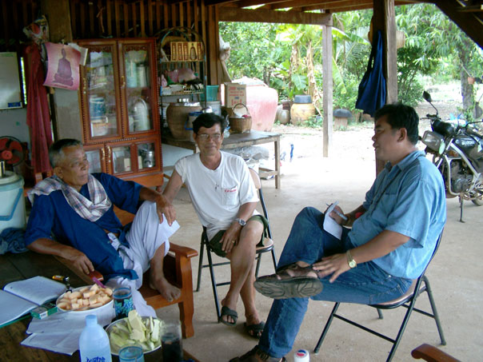
Ajaan Thanawm (center) relaxes at his home with other community leaders in Khao Din village.
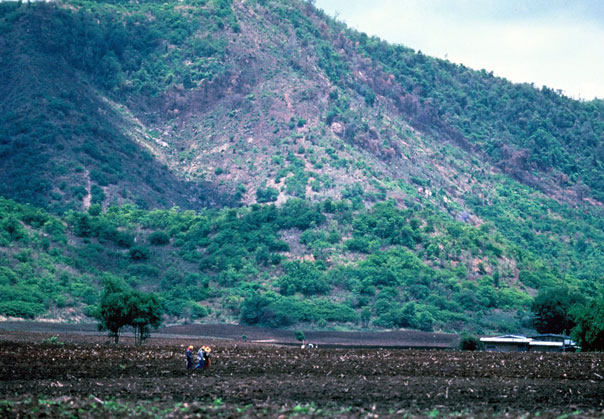
Forest was cut to make this field for monoculture of export crops. The deforested hillside in the background shows severe erosion.
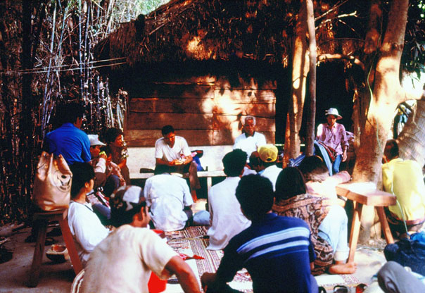
Khao Din villagers at work on community planning in 1986.
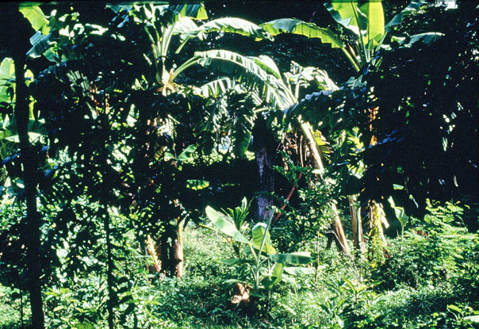
Agroforestry mimics a natural forest, with crops ranging from small plants on the ground to tall fruit trees.
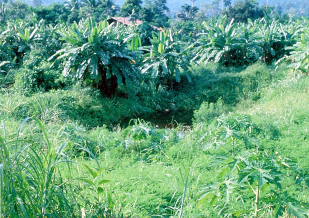
Diverse crops completely cover the ground and protect the soil from erosion.
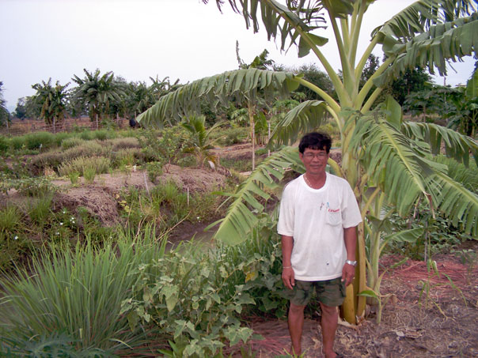
Crop diversity provides a variety of foods. The mulch on the ground protects the soil from erosion.
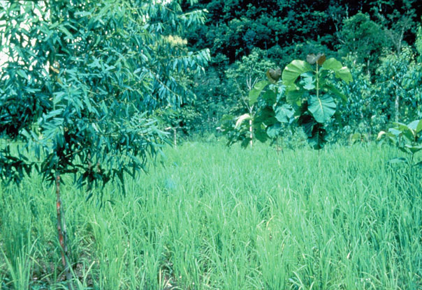
Useful trees mixed into a rice field. Forest can be seen in the background.
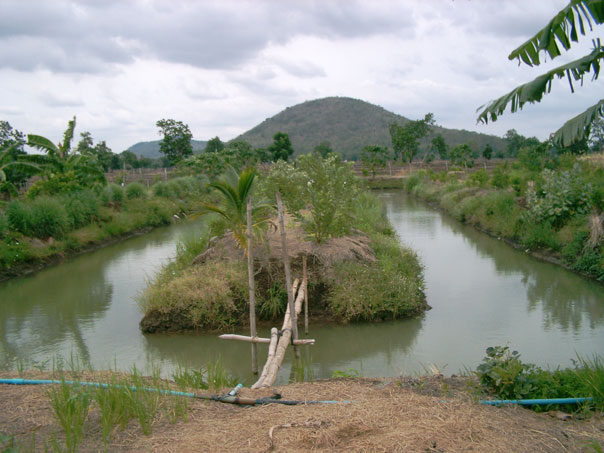
Irrigation pond on Ajaan Thanawm’s farm (containing fish and crabs for sale and household consumption).
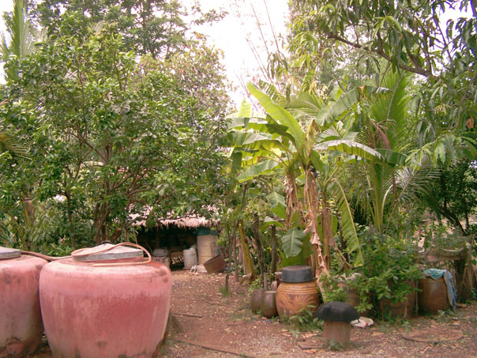
The Kitchen garden at Ajaan Thanawm’s home features a diversity of food crops. The large ceramic pots store rainwater for household use or watering plants.

Khao Din’s community forest in the dry season.
4. Ingredients for Success in EcoTipping Point Case Studies (Short Handout)
Shared community awareness and commitment.
Strong democratic institutions and genuine community participation are prominent in EcoTipping Point stories. The community moves forward with its own decisions, manpower, and financial resources, so everyone feels a sense of ownership for community action.
Outside stimulation and facilitation.
Outsiders can be a source of fresh ideas and encouragement. A success story typically begins when people or information from outside a community stimulate a shared awareness about a problem and introduce game-changing ideas for dealing with it.
Enduring commitment of local leadership.
Trusted and persistent leaders inspire the deep-rooted and continuing community commitment and participation necessary to reverse the vicious cycles driving decline.
Co-adaptation between social system and ecosystem.
Social system and ecosystem fit together, functioning as a sustainable whole. When one gains, so does the other.
"Letting nature do the work."
EcoTipping Points create the conditions for an ecosystem to restore itself by drawing on nature's healing powers.
Rapid results.
Quick "payback" and something that can stand as a symbol of success help communities stay committed to change.
Key Symbol.
Something that serves as inspiration or stands for success in a way that helps communities stay committed to change.
Overcoming social obstacles.
Overcoming social, political, and economic obstacles that could block positive change.
Social and ecological diversity.
Greater diversity of people, ideas, experiences, and environmental technologies provide more choices and opportunities, and therefore better chances that some of the choices will be good.
Social and ecological memory.
Learning from the past adds to diversity and often points to choices that were once sustainable. Ecosystems contain "memory" of nature's design for sustainability.
Building resilience.
"Locking in" sustainability by creating the ability to adapt and deal with new (and often unexpected) conditions that threaten sustainability.
Vocabulary
- Stimulation: To excite activity or growth.
- Social System: Everything about a human society, including its organization, knowledge, technology, language, culture, and values.
- Ecosystem: All the living things (plants, animals, microorganisms) and their environment at a particular place.
- Restoration: A return of something to its original, unharmed condition.
- Facilitation: Helping to make something easier or happen successfully.
- Institution: An established pattern of behavior or relationships in a particular society.
- Co-adaptation: Two or more things adjusting to each other and fitting together so they function well.
- Obstacles: The people, things, or events that can block our way.
- Diversity: Variety (many things different from each other).
- Resilience: The ability to return to an original form after severe stress or disturbance.
5. Ingredients for Success in EcoTipping Point Case Studies (Extended Handout)
What does it take to turn around the vicious cycles driving environmental decline? Basically, it takes appropriate environmental technology combined with the social organization to put it effectively into use. More specifically, EcoTipping Point case studies have consistently shown that the following ingredients are keys to success.
Shared community awareness and commitment.
Strong democratic institutions and genuine community participation are prominent in EcoTipping Point stories. These stories do not typically feature top-down regulation or elaborate development plans with unrealistic goals. Of particular importance is a shared understanding of the problem and what to do about it: Shared recognition of why the problem has occurred, shared vision and knowledge of what can be done to set a turnabout in motion, and shared ownership of the community action that follows. The community devises an effective procedure for making this shared understanding a reality. It draws upon its collective experience and moves forward with its own decisions, manpower, and financial resources.
Outside stimulation and facilitation.
We seldom see EcoTipping points "bubble up from within." Outsiders can be a source of fresh ideas and encouragement. While action at the local level is essential, a success story typically begins when people or information from outside a community stimulate a shared awareness about a problem and introduce game-changing ideas for dealing with it. EcoTipping Point success stories will become more common only with explicit programs to provide this kind of stimulation to local communities.
Enduring commitment of local leadership.
Persistence is a key to success. A turnabout from decline to restoration seldom comes easily. It requires community commitment to apply an EcoTipping Points lever with sufficient force to reverse the vicious cycles driving decline. Trusted and persistent leaders inspire the deep-rooted and continuing community commitment and participation necessary for success.
Co-adaption between social system and ecosystem.
Social system and ecosystem fit together, functioning as a sustainable whole. As an EcoTipping Point story unfolds, perceptions, values, knowledge, technology, social organization, and social institutions all evolve in a way that enhances the sustainability of valuable social and ecological resources. Social and environmental gains go hand in hand. "Social commons for environmental commons" are developed, including clear ownership and boundaries, agreement about rules, and enforcement of rules.
"Letting nature do the work."
Micro-managing the world’s environmental problems is far beyond human capacity. EcoTipping Points give nature the opportunity to marshal its self-organizing powers to set restoration in motion.
Rapid results.
Quick "payback" helps to mobilize community commitment. Once positive results begin cascading through the social system and ecosystem, normal social, economic, and political processes took it from there.
A powerful symbol.
It is common for a prominent feature of the local landscape – or some other key aspect of an EcoTipping Point story – to represent the entire process in a way that consolidates community commitment and mobilizes community action to carry it forward.
Overcoming social obstacles.
The larger socio-economic system can present numerous obstacles to success on a local scale. For example:
- It imposes competing demands for people’s attention, energy, and time. People are so "busy," they don’t have time to contribute to the "social commons."
- People who feel threatened by innovation or other change take measures to suppress or nullify the change.
- Outsiders try to take over valuable resources after the resources are restored.
- Dysfunctional dependence on some part of the status quo prevents people from making changes necessary to break away from decline.
Social and ecological diversity.
Greater diversity provides more choices and opportunities – and better prospects that some of the choices will be good. For example, an ecosystem’s species diversity enhances its capacity for self-restoration. Diversity of perceptions, values, knowledge, technology, social organization, and social institutions provide opportunities for better choices.
Social and ecological memory.
Social institutions, knowledge and technology from the past have "stood the test of time" and may have something to offer for the present. Nature’s "memory" exists in the resilience of living organisms and their intricate relationships in the ecosystem, which have emerged from the time-testing process of biological evolution.
Building resilience.
“Resilience" is the ability to continue functioning in the same general way despite occasional and sometimes severe external disturbance. EcoTipping Points are most effective when they not only not only set in motion a course of sustainability, but also enhance the resilience to withstand threats to sustainability. As EcoTipping Point stories play themselves out, new virtuous cycles emerge to reinforce and consolidate the gains. A community’s adaptive capacity – its openness to change based on shared community awareness, prudent experimentation, learning from successes and mistakes, and replicating success – is central to resilience.
Vocabulary
- Stimulation: To excite activity or growth.
- Social System: Everything about a human society, including its organization, knowledge, technology, language, culture, and values.
- Ecosystem: All the living things (plants, animals, microorganisms) and their environment at a particular place.
- Restoration: A return of something to its original, unharmed condition.
- Facilitation: Helping to make something easier or happen successfully.
- Institution: An established pattern of behavior or relationships in a particular society.
- Co-adaptation: Two or more things adjusting to each other and fitting together so they function well.
- Obstacles: The people, things, or events that can block our way.
- Diversity: Variety (many things different from each other).
- Resilience: The ability to return to an original form after severe stress or disturbance.
6. Ingredients for Success: Reversing Tropical Deforestation (Student Worksheet)
Instructions: This worksheet will help you to identify the Ingredients for Success in a real situation. First review the Vocabulary needed for this success story. Second, read the success story, underlining the new vocabulary as you go. Finally, write on your worksheet a bullet-point list of elements in the story that are examples of each ingredient for success. For instance, if someone from another city introduced a new idea or helped get a project going, you could put a phrase or sentence about that under ‘outside stimulation and facilitation.’ Be as SPECIFIC as possible. You should have at least one example for each ingredient, though for some you may have many!
Vocabulary
- Monoculture: Only one kind of crop in a field.
- Polyculture: A mixture of different crops in the same field.
- Cassava: A root crop used to make tapioca. Thailand exports cassava to Europe for animal feed.
- Irrigation. Supplying water to crops where (or when) there is not enough rainfall.
- Watershed. An area of land that drains water into streams, rivers, lakes, or oceans to provide water for human use.
- Soil erosion. Loss of soil carried away by wind or rainwater.
- Materialistic. Strongly valuing physical objects as a source of comfort, status, and happiness.
- Cottage industry. The production of goods on a small scale, often at home.
Student Responses
- Shared community awareness and commitment
- Outside stimulation and facilitation
- Enduring commitment of local leadership
- Co-adaption between social system and ecosystem
- “Letting nature do the work”
- Rapid results
- A powerful symbol
- Overcoming social obstacles
- Social and ecological diversity
- Social and ecological memory
- Building resilience
7. Ingredients for Success: Reversing Tropical Deforestation (Teacher Key)
Shared community awareness and commitment.
Strong democratic institutions and genuine community participation are prominent in EcoTipping Point stories. Of particular importance is a shared understanding of the problem and what to do about it, and shared ownership of the action that follows. Communities move forward with their own decisions, manpower, and financial resources. The people of Khao Din village worked together to retrace the history of what went wrong and why. They then formulated a strategy to improve the situation. Farmers had the courage to experiment with new agroforestry methods on their land because they were reassured by community commitment to what they were doing. Rebuilding a community forest, which required teamwork to replant and maintain it, had a broad base of participation.
Outside stimulation and facilitation.
Outsiders can be a source of fresh ideas. While action at the local level is essential, a success story typically begins when people or information from outside a community stimulate a shared awareness about a problem and introduce game-changing ideas for how to deal with it. In the early 1980s, members of the international aid organization Save the Children awakened Khao Din villagers' awareness about the true source of their predicament, and encouraged them to devise their own solutions. The organization provided facilitation for community planning, backed up by technical assistance. In the late 1990s, the Thai government began supporting agroforestry and community managed forests as part of His Majesty's "Sufficiency Economy" program.
Enduring commitment of local leadership.
Trusted and persistent leaders inspire the deep-rooted and continuing community commitment and participation necessary for success. After Save the Children left Khao Din, village leader Ajaan Thanawm continued the organizational efforts held in by founding the "Association of Agriculture, the Environment and Development, Nakhon Sawan," which has catalyzed the adoption of agroforestry in more than 40 other villages. A study of more successful and less successful adoption of agroforestry in those villages concluded that the more successful villages had a trustworthy and motivated leader who could inspire enthusiasm in others.
Co-adaption between social system and ecosystem.
Social system and ecosystem fit together, functioning as a sustainable whole. Communities create a "social commons" to fit their "environmental commons." In Khao Din, social institutions developed that were appropriate for watershed management and restoration. The community developed a sense of ownership of the land, which—together with increased awareness of environmental problems—led to even better stewardship. Villages enforced rules governing the use of chemical fertilizers and pesticides. Soil quality and biodiversity were markedly improved. As the farmers turned from monocropping to agroforestry, their quality of life improved. The ecosystem provided a healthy and varied diet. Villages no longer have to buy food from outside their community. Outsiders were prevented from cutting trees in community protection forests or otherwise damaging them. As agroforestry and protection forest trees grew larger, carbon dioxide was removed from the atmosphere and the carbon sequestered in the wood of the trees.
"Letting nature do the work."
EcoTipping Points give nature the opportunity to marshal its self-organizing powers to set restoration in motion. Being in harmony with nature is one of the key ideals in Buddhism. The restored ecosystem resembles in many ways the structure of a natural forest and its ecosystem services. Ecological stability is improved; soil erosion and degradation are reversed; more water is available. The construction of fishponds and planting of a variety of fruits and vegetables enables nature to provide a bounty of good food, and natural methods (without the heavy use of chemicals) take advantage of natural fertilizers and pest control.
Rapid results.
Quick "payback" helps to mobilize community commitment. A single growing season showed the benefits of polyculture for family food. What started on 8 acres of demonstration plots spread quickly as the benefits became clear. Farmers earned less cash than they hoped to get with the export crops, but their costs for food and agricultural inputs were drastically reduced, and a wide range of forest products became available as well. The full benefits (economic, social, and environmental) of agroforestry and community forest can take 2 to 5 years to develop, but successful farmers then serve as models for others.
A powerful symbol.
It is common for prominent features of EcoTipping Point stories to serve as inspirations for success, representing the restoration process in a way that consolidates community commitment and mobilizes community action. Leaders such as Ajaan Thanawm and the King of Thailand were important symbols in this story. Reviving the ecosystem also fit the Buddhist ideal of a balance with nature.
Overcoming social obstacles.
The larger socio-economic system can present numerous obstacles to success on a local scale. For example, people may have so many demands on their time, it is difficult to find the time for community enterprises, but villagers had to be willing to devote time to community meetings and community work. They followed the rules, and were able to prevent outsiders from appropriating resources (e.g., cutting trees and farming on the village's land). The change in government policy was helpful, as it changed from encouraging cash-crop monoculture with high inputs of artificial chemicals to an emphasis on self-sufficiency. However, many of the people, especially young people, are not satisfied with low cash incomes.
Social and ecological diversity.
Diversity provides more choices, and therefore more opportunities for good choices. The greatly improved diversity of farm and forest plant life meant that no cash was needed to buy fruits, vegetables, and other food. Farming system and livelihood diversification through integrated farming based on agroforestry, home processing of agricultural products and cottage industries, combined with communal forest management, empowered villagers to recapture control of their lives through community-based sustainable resource management. With the diversification of livelihoods and less need for urban migration, the village population has a more balanced representation of all age groups and fewer social problems associated with neglected children or dissatisfied youths.
Social and ecological memory.
Learning from the past adds to the diversity of choices, including choices that proved sustainable by withstanding the "test of time." Nature contains an evolutionary "memory" of its ecological design for sustainability.The villagers remembered not only what the landscape looked like before, but also remembered their traditional technical know-how, such as integrating fish ponds and trees onto their farms, forest products gathering, and cottage industries. They spoke of agroforestry as "going back to their roots." Mimicking a forest took advantage of nature's built-in memory.
Building resilience.
"Resilience" is the ability to continue functioning in the face of sometimes severe external disturbances. The key is adaptability. More diverse agriculture, and watershed restoration, led to more resilience to weather and market fluctuations. Decreasing production expenses and debt led to more resilient family finances and less need for drastic measures such as overexploitation of forest products or migration to cities for work. There was also a fundamental change in people's thinking, toward working together as a community and away from unchecked materialism. The restored social support system provided further resilience.
8. Feedback Diagrams: Reversing Tropical Deforestation (Student Worksheet)
Diagram for students to fill in
Instructions: Fill in the blanks in the boxes, writing “more” to indicate an increase during the story’s period of decline, or “less” to indicate a decrease during that period. Draw arrows between boxes to show which factors were affecting other factors strongly enough to cause their increase or decrease. There should be at least one arrow pointing away from each box and at least one arrow pointing into each box. Finally, trace circular patterns of the arrows that represent “vicious cycles” that were set in motion by the negative tipping point and driving decline.
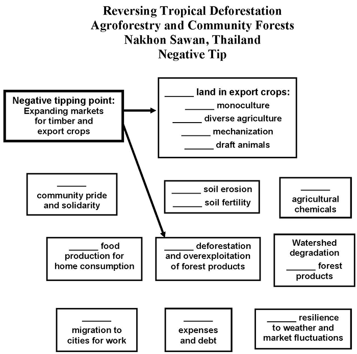
Diagram for students to fill in
Instructions: Fill in the blanks in the boxes, writing “more” to indicate an increase during the story’s period of restoration, or “less” to indicate a decrease during that period. Draw arrows between boxes to show which factors were affecting other factors strongly enough to cause their increase or decrease. There should be at least one arrow pointing away from each box and at least one arrow pointing into each box. Finally, trace circular patterns of the arrows that represent “virtuous cycles” that were set in motion by the positive tipping point and driving restoration.
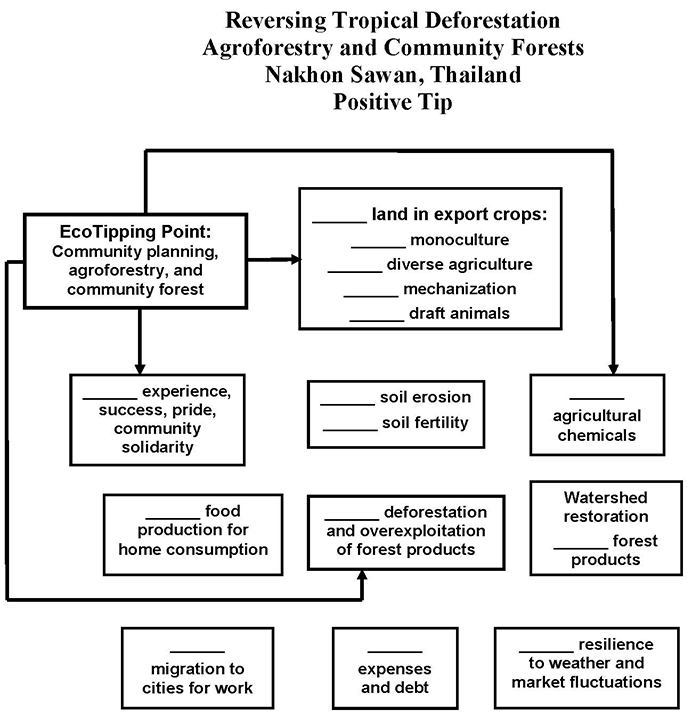
9. Feedback Diagrams: Reversing Tropical Deforestation (Teacher Key)
Agroforestry and community forest management in Thailand reversed a vicious cycle of deforestation, watershed degradation, expensive agricultural inputs, debt, and population exodus, while restoring local forests and the ecological health of the watershed, securing people’s livelihoods with sustainable agriculture, and reducing carbon dioxide emissions due to deforestation.
It was a time when farmers from Northeast Thailand were moving into this relatively uninhabited region, seeking a better life. Commercial logging concessions opened up new land for farming, accommodating landless families and a growing population. The process was accelerated by expanding domestic and foreign markets for timber, rice, maize, and cassava, accompanied by government policies that encouraged agricultural exports in order to increase government revenues.
Nakhon Sawan seemed a land of opportunity, but soon the landscape and the community were caught in a downward spiral that threatened to close off the prospects for a better life the settlers had sought. It happened because of a chain of events initially set in motion by expanding markets for timber and cash crops (see negative tip diagram):
- Expanding agricultural markets encouraged a shift from subsistence polyculture to monocultures of the most profitable cash crops.
- Monoculture encouraged mechanization and a diminishing role for traditional draft animals such as water buffalos, which provided manure.
- Cash cropping encouraged multiple cropping (i.e., more than one crop a year), meaning more time devoted to farm work and less time to contribute to the community support system.
- Chemical fertilizer use was increased to achieve higher yields and compensate for a diminished supply of animal manure. Chemical pesticide use increased because monocultures generally have more severe pest problems than polycultures.
- Farm land fertility declined due to intensive use, soil erosion, and chemical burden in the soil.
- Family food expenses increased as cash cropping provided less food for home consumption.
- Debt increased due to expenses for chemical fertilizers, pesticides, mechanical tillage, and a generally perceived need for greater material consumption, along with increasing family expenses for food, medicine, and other essential commodities.
- Farmers expanded the amount of land they were farming to earn more money to cover increasing expenses for agricultural inputs and service their debts. Debt also increased the need for income from clearing forest land to sell the timber and stimulated overexploitation of forest products.
- Deforestation increased soil erosion and reduced the hydrological integrity of the watershed, reducing infiltration of rainwater to subsurface aquifers. Water shortages threatened the viability of human settlements while reducing agricultural production and the quantity and diversity of forest products for sale or home consumption.
- A less reliable water supply and more floods from a deteriorating watershed, greater dependence on food purchases for family consumption, and deterioration of the community support system eroded food security, financial security, and resilience to stresses such as downturns in farm income due to bad weather or market fluctuations.
- Debt forced able-bodied men (and later women) to migrate to cities, at first seasonally and later year-round, seeking work to supplement family incomes. This eroded community solidarity and traditional support systems, while increasing the cost of farming as it became necessary to mechanize further or hire labor from outside the family.
- Community fragmentation and impoverishment increased usury and debt, along with dysfunctional social behavior such as thievery.
- The result was an interconnected system of mutually reinforcing vicious cycles that drove the landscape and the community into progressively greater decline.
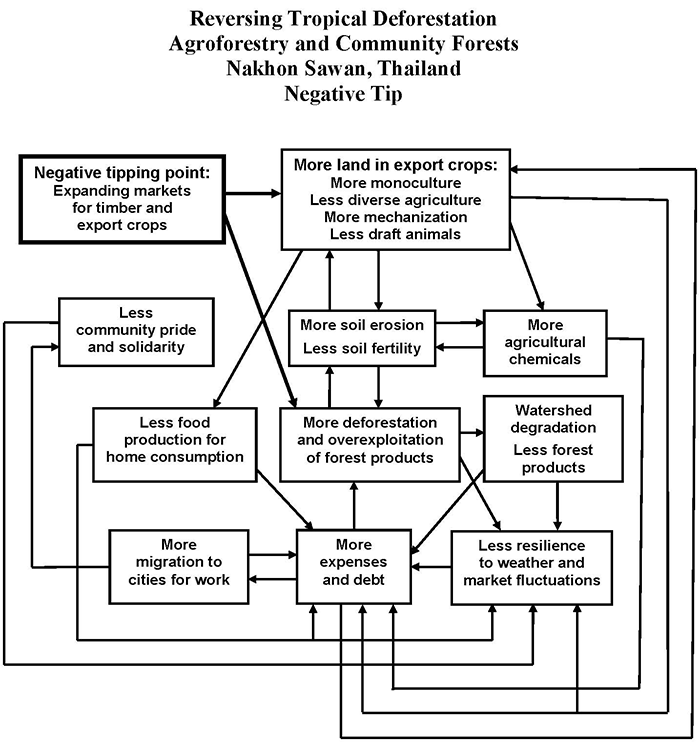
The positive tipping point was the introduction of agroforestry and establishment of a community protection forest accompanied by a process of community dialogue and problem solving that enabled successful implementation.
Agroforestry offered the following benefits:
- More income and opportunity for debt reduction if the agroforestry was commercially successful.
- "Weeds" around tree crops protected the soil from erosion and helped maintain soil fertility.
- Diversity of agroforestry provided both cash crops and food for home consumption.
- Less mechanization and a greater role for draft animals and their manure reduced the need for chemical fertilizer.
- Less chemical fertilizers and pesticides reduced input costs.
- Lower labor inputs associated with agroforestry allowed time to contribute to the community support system.
- The diversity of agroforestry was more resilient to weather and market fluctuations.
Maintaining a protection forest as an integral part of the landscape provided:
- A healthy watershed for reliable water supply, protection from soil erosion, and flood prevention.
- A more secure supply of forest products for cash and home consumption.
- Reversal of vicious cycles in the negative tip transformed them into virtuous cycles that fostered and sustained a healthier and more productive landscape and an economically and socially healthier community.
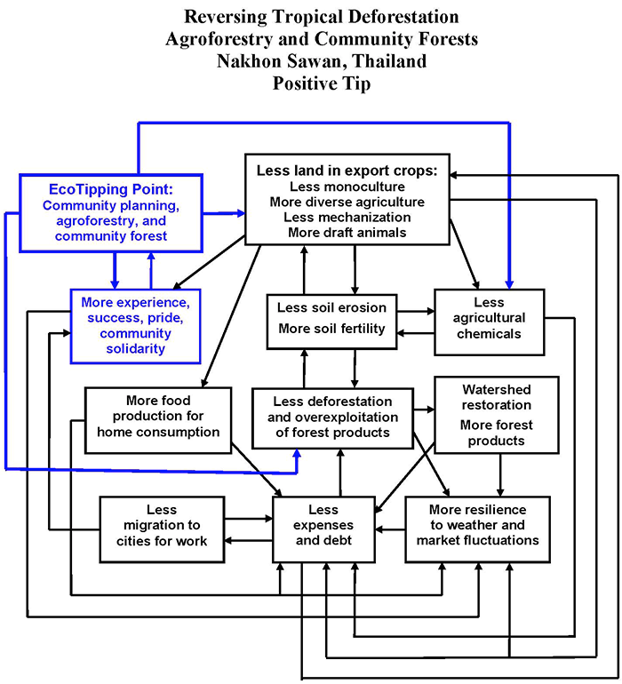
Black: Vicious cycles reversed by the EcoTipping Point, transforming those vicious cycles into virtuous cycles.
Blue: Additional benefits created by the EcoTipping Point, forming new virtuous cycles that helped to lock in the gains.
10. Ingredients for Success Powerpoint Preview
Use Previous, Next, or the slide menu to view the presentation.
11. "Student Centered How Success Works" PowerPoint Preview
This PowerPoint file contains photos for this case. Teachers can use it for PowerPoint presentations, and students can use it to create their own presentations as described in Step #10 of “Suggested Procedure” at the top of this page.
Use Previous, Next, or the slide menu to view the presentation.
12. Video:
Reversing Tropical Deforestation with Agroforestry and Community Forests (Thailand)
- Producer: Damon Wolf
- Download: video-etp-thailand.mp4
- Watch this video on YouTube
- Agroforestry farming and community-managed forests empower impoverished villagers to optimize their resources, both natural and human, while showing how to reduce greenhouse gases by sequestering carbon from the atmosphere.
- Download video script (PDF)